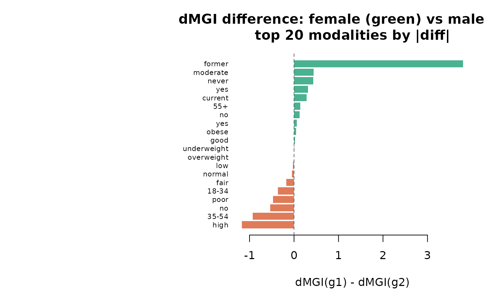

Computes modality_gravity on two conditional modality graphs and returns a side-by-side comparison of dMGI, OS, and role for every modality present in either graph. Optionally plots a dot-chart of dMGI differences.
Source: R/gravity_plots.R
compare_gravity.RdComputes modality_gravity on two conditional modality graphs
and returns a side-by-side comparison of dMGI, OS, and role for every
modality present in either graph. Optionally plots a dot-chart of dMGI
differences.
Arguments
- x
A named list of exactly two
catmodgraphobjects, e.g.list(women = mg_f, men = mg_m). Names are used as group labels.- plot
Logical. Whether to draw a comparison dot-chart. Default
TRUE.- top_n
Integer. Number of modalities to show in the plot (those with the largest absolute dMGI difference). Default
20L.- ...
Additional arguments passed to
modality_gravity.
Value
A data frame with columns node, variable,
modality, and for each group g1/g2:
prevalence_g1, delta_mgi_g1, os_g1,
role_g1 (and equivalents for g2), plus delta_mgi_diff
(g1 - g2). Rows are ordered by abs(delta_mgi_diff)
descending.
Examples
# \donttest{
data(survey_health)
mg_f <- build_conditional_modality_graph(survey_health,
given = list(sex = "female"))
mg_m <- build_conditional_modality_graph(survey_health,
given = list(sex = "male"))
mg_f <- prune_modality_edges(mg_f, min_weight = 0.10, max_p = 0.05)
mg_m <- prune_modality_edges(mg_m, min_weight = 0.10, max_p = 0.05)
cmp <- compare_gravity(list(female = mg_f, male = mg_m))

print(head(cmp, 10))
#> node variable modality prevalence_female
#> 1 smoking_status=former smoking_status former 0.3107
#> 2 exercise_freq=high exercise_freq high 0.2913
#> 3 age_group=35-54 age_group 35-54 0.3252
#> 4 health_insurance=no health_insurance no 0.2233
#> 5 diet_quality=poor diet_quality poor 0.3107
#> 6 exercise_freq=moderate exercise_freq moderate 0.3252
#> 7 smoking_status=never smoking_status never 0.4612
#> 8 age_group=18-34 age_group 18-34 0.3932
#> 9 health_insurance=yes health_insurance yes 0.7767
#> 10 smoking_status=current smoking_status current 0.2282
#> delta_mgi_female os_female role_female prevalence_male delta_mgi_male
#> 1 3.9140 0.6739 attractor 0.2359 0.1131
#> 2 0.0661 0.4820 attractor 0.2769 1.2373
#> 3 -0.1331 0.1537 satellite 0.4410 0.7921
#> 4 -0.5221 1.1880 satellite 0.2103 0.0118
#> 5 -0.1160 0.1858 satellite 0.3128 0.3539
#> 6 0.4428 0.7460 attractor 0.4051 0.0000
#> 7 1.6641 1.0736 attractor 0.4769 1.2346
#> 8 1.0068 1.3410 attractor 0.3641 1.3715
#> 9 1.8159 0.3416 attractor 0.7897 1.4981
#> 10 0.5249 2.0601 attractor 0.2872 0.2449
#> os_male role_male delta_mgi_diff
#> 1 0.4135 attractor 3.8009
#> 2 1.3554 attractor -1.1712
#> 3 0.6004 attractor -0.9252
#> 4 0.9104 attractor -0.5339
#> 5 1.1123 attractor -0.4699
#> 6 0.0000 neutral 0.4428
#> 7 1.1081 attractor 0.4295
#> 8 1.8771 attractor -0.3647
#> 9 0.2424 attractor 0.3178
#> 10 1.0714 attractor 0.2800
# }